I. The Subversive Core of Comics
"Any startling piece of work has a subversive element in it, a
delicious element often. Subversion is only disagreeable when it
manifests in political or social activity."
- Leonard Cohen
In the 1960s American comics changed. They were always regarded
as shrill, cheap, and trashy, with dropping sales in the past
decade. Yet at their core, they became subversive, in tune with
the rising counterculture of the 1960s. This decade brought a
cultural explosion: questioning traditional modes of authority,
protests against the war in Vietnam, a vocal youth culture, new
music, widespread social tensions, liberated sexuality, women's
rights, experimentation with psychoactive drugs.
In his seminal work
Understanding Comics: The Invisible Art
,
Scott McCloud describes comics as "juxtaposed pictorial and
other images in a deliberate sequence, intended to convey
information and/or produce an aesthetic response in the viewer."
As an art form, they were much more than that; they were an echo
of the world around them. And in the 1960s they transformed
along two different lines: commercial comics and the "comix
underground."
How to Draw Comics the Marvel Way
By the 1960s "mainstream" comics were firmly set in the
superhero genre. DC Comics, the industry's top dog, with its
stable of superheroes such as Batman, Superman, and Wonder Woman
was being challenged by upstart Marvel comics. The work of
writer Stan Lee and artists Jack Kirby and Steve Ditko subverted
the comics mainstream that was traditionally oriented towards
children. They introduced superheroes who appealed to older
readers, breaking convention with other archetypes of the time
by showing characters with personal flaws, who quarreled with
their peers, and who lived in the eventful world of the 1960s.

Figure 2: Black Bolt of the Inhumans in a panel from
Fantastic Four #59 by Jack Kirby (pencils) and Joe
Sinnott (inks).
In
American Experiences: Readings in American History: Since
1865,
Randy Roberts and James S. Olson wrote that "Marvel Comics
employed a realism in both characterization and setting in its
superhero titles that was unequaled in the comic book
industry."

Figure 3: Psychedelic panel from Silver Surfer #1 by
John Buscema (pencils) and Joe Sinnott (inks).
In comics series such as Fantastic Four,
Doctor Strange, and Silver Surfer, Kirby,
Ditko, and Lee plotted grand "cosmic" ideas about
extraterrestrial civilizations, different dimensions,
personified embodiments of abstract notions, whole human
cultures hidden from the world, and alien gods. Many of these
concepts were exaggerated ideas previously encountered in
science fiction, but the way the Marvel artists depicted it,
much of the imagery was psychedelic and on a cosmic scale.
The comics published at Marvel managed the then unique bridge
between the absurdly grand and the humbly human. Simply put,
Marvel comics were a breath of fresh air.
Drawing from the Underground
The second component of the one-two punch of the comics
renaissance of the 1960s was underground comix (yes, spelled
with an "x"). These small-press or self-published comic books
often covered socially relevant issues in a satirical manner.
Their art style flew in the face of the established superhero
comics, ranging from deliberately dilettante to classically
rendered or even caricature. Underground comix were not bound by
the restrictions of other printed media, often openly depicting
sexuality, explicit drug use, and violence.

Figure 4: Piece drawn in ink by artist Robert Crumb from
The Complete Crumb Comics
Vol. 4: "Mr. Sixties!"
The main progenitors on the comix underground were Robert Crumb,
Gilbert Shelton, Trina Robbins, Gary Panter, Barbara "Willy"
Mendes, and many other artists who spread their work in the
counterculture scene.
The genre featured strips such as Frank Stack's
The Adventures of Jesus in 1962 and Gilbert Shelton's
Wonder Wart-Hog, as found in college-humor magazine
Bacchanal #1-2 in the same year. Robert Crumb
self-published Zap Comix in San Francisco in 1968. Many
titles covered subjects as widely varied as politics and
pornography.

Figure 5: Gilbert Shelton's Freak Brothers.
Underground comix subverted the limitations of the comics medium
and brought a new energy and inspiration to the cultural
mainstream.
Technology and Art
To a certain extent, it is fair to say that drawing and
distributing comics is not merely a function of art but very
much of technology. It only became feasible to easily produce
and distribute comic books once the process of printing became
widely enough available and cheap enough to warrant it.
One of the reasons for the widespread adoption of comic books as
a creative outlet was that creating a comic book took far fewer
resources than other mediums. Making a movie back in the 1960s
was an expensive and time-consuming endeavor, and getting a film
distributed was often an insurmountable hurdle for fledgling
filmmakers.
To create a comic book, all you needed were pencil and paper,
pen and ink . . . and something to say, a story to tell. Of
course, if you wanted to touch the souls of your readers, you
also needed talent. Even in the 1960s, finding and paying for a
printer for the low print runs in black and white on cheap paper
was feasible, if not always easy. To get something printed in
color was far more expensive, and you would usually have to go
to an established publisher.
Underground artists could distribute their finished product
themselves by using the many record stores or comics specialty
shops in large metropolitan areas. Established publishers could
default to newsstand distribution or mainstream retail outlets.

Figure 6: A pencilled comic panel before it was inked and
lettered (Jack Kirby, 1978).
No Creative Limits
While printing technology and publishing have evolved over time,
the core process of creating comics has not changed a lot. You
tell a story in panels, usually rectangular sections that
progress across the page with glimpses of what is happening with
characters, objects, and locations drawn in them. Exposition and
dialogue are lettered into boxes and speech bubbles. You even
have a mechanism to show the thoughts of characters as clouds
hovering close to their heads.
Potentially, it only takes a single writer-artist to create a
comic story. The creator thinks of a story plot and sketches it
out roughly, either as thumbnail images or directly on the page
where they will draw the artwork. Usually, the original artwork
is in a format much larger than the printed result; the process
of reducing it in print brings out the details.
While a single individual could do everything
themselves, and many have in the past, the process is most
likely split up among more creators. A writer would write the
plot and the dialog. A penciler sketches out the character,
settings, and locations in the panels on a page, focusing on
getting proportions and perspective right and telling the story
the writer describes in their script. The inker takes the
penciled pages and gives the pale lines weight, the depicted
objects and characters texture, and even corrects the occasional
lapse in the pencil. A letterer puts in the speech bubbles,
captions, and thought balloons and adds sound effects where
necessary. And finally, a color product requires a colorist.
Creating comics can be a very collaborative process.
Underground and independent comics did not always follow this
approach. They might produce comics alone or as a duo of
creators to come up with story and art collaboratively.

Figure 7: The cover of Tomb of Dracula #1 during the
production process.
Most importantly, what was depicted on the page was not limited
by budget or available locations and actors, as is the case in
filmmaking. Given sufficient time and talent, anything could be
drawn on the page, be it a vast space fleet, a rock concert with
thousands of people in the audience, a robot army, an alien
world, or a caricatured celebrity. Comics could be "artsy" or
actually artistic. They could depict high adventure or devious
drama; they could be juvenile or raunchy. And, of course, they
could show the high jinks and tribulations of superheroes.
Any story or genre could find its place on a comic's page, only
limited by the creators' imaginations. Given the right
technological advancements, comics not only were capable of
subverting genres but potentially, they might even subvert art
itself.
II. Shatter
The purpose of art is washing the dust of daily life off our
souls.
- Pablo Picasso
Nowadays, computers are prolific. Pretty much everyone has one
in their pockets in the shape of a smartphone. Some people even
wear computers. Digital technology is everywhere.
If we turn the dial back to 1984, we see that computers were
still thought of as a science-fiction device. While kids loved
their video games, adults regarded computers with awe. At the
time, few understood what they were capable of then or how
transformative they would be in all areas of life going forward.
Only two years prior, William Gibson had coined the term
"cyberspace." The writer had published his debut novel
Neuromancer, a book that led a wave of excitement about
the possibilities of computers. In 1984 Apple founder Steve Jobs
introduced the first Macintosh computer.
Colliding at the Cross-Section of Art and Technology
It seemed that the Apple Macintosh was destined for graphics
work, for art. At its launch, Apple made programs available such
as MacPaint and MacDraw. This opened up a world of possibilities
for artists and for computer-assisted art and design.
Throughout the history of comics, writers and artists have
experimented with the medium in a multitude of ways. They have
developed artistic techniques to change existing conventions
into something new. Through changes in the culture around them,
they have seen new perspectives and depicted the cognitive shift
in their work. In the early 1980s, comics grew stale and timid.
The mainstream titles such as The Uncanny X-Men and
The New Teen Titans had turned from the daring upstarts
to the status quo. Not only audiences but also the artists
producing comic books had a constant hunger for something fresh
and exciting.
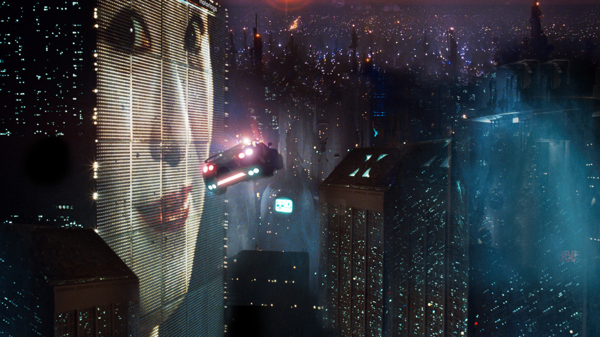
Figure 8: Still from Bladerunner, directed by Ridley Scott in
1982.
As William Gibson once said: "The street finds its own uses for
things."
The advent of the first affordable graphics computer, the
zeitgeist of cyberpunk, and the hunger for new visuals and
storytelling collided at the cross section of technology and
art. In 1985 they converged to create Shatter, the
first digitally produced comic book.
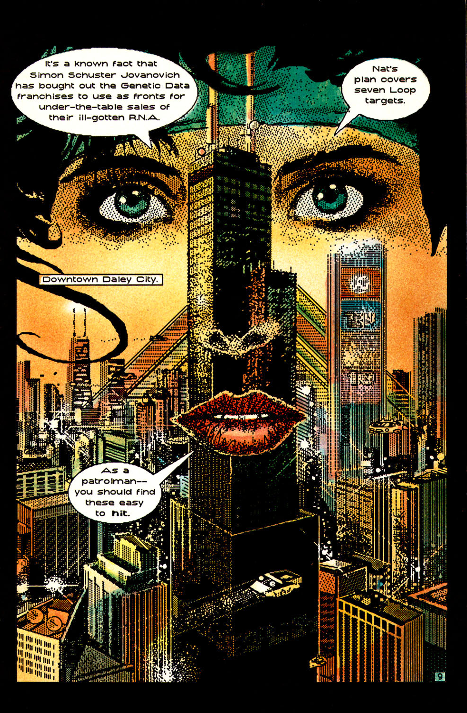
Figure 9: Splash page from Shatter #1 (art by Michael
Saenz).
What Is Shatter About?
First Comics Publishing's Shatter was created by artist
Mike Saenz and writer Peter B. Gillis. It is a self-described
tech-noir thriller, the story of the private eye Sadr al-Din
Morales, commonly referred to as Shatter. The story is
very much of its time. Much of it stands on the shoulders of
works such as Ridley Scott's 1982 film Bladerunner and
Gibson's novel Neuromancer. In its own campy way,
Shatter discusses concepts that are nowadays common and
perhaps even quaint, such as the dangers of technology in a
dystopian future and the distrust of corporations. In its own
way, the book eschews the main subject matter of mainstream
comic books by aspiring to be cyberpunk without explicitly
claiming to be it. Cyberpunk, we remember, is the grim and
gritty science fiction sub-genre. This "combination of lowlife
and high tech" (as described by Bruce Sterling in his preface to
William Gibson's Burning Chrome) features advanced
technology, such as global networks, brain-computer interfaces,
and artificial intelligence, all coexisting and competing with
the radical breakdown of social order, as only the early 1980s
could imagine.
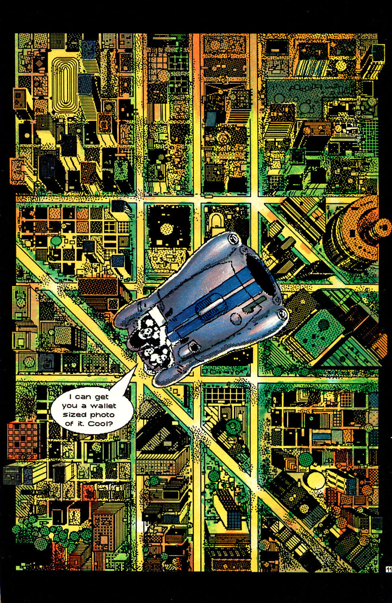
Figure 10: Splash page from Shatter #2, (art by Mike
Saenz).
The protagonist, Shatter, takes on the job of tracking
down a serial killer who killed the board members of a large
corporation. When he finds her, she reveals to him that the
corporation uses human RNA to transfer the skill sets of people
to others. Our hero finds himself involved with the underground
movement dedicated to stopping this practice. In a surprising
turn of events, Shatter finds out that he has "golden
brain" that keeps any RNA-induced talents indefinitely without
losing them, as everyone else does eventually.
Shatter occasionally veers toward the prophetic when it
depicts our protagonist bidding on a "gig" to take a case,
hinting at today's emerging "gig economy," as found on
fiverr.com and upwork.com. Other concepts sound unrealistic but
not completely out of the question, such as splicing talents
into a person's RNA to give them the special abilities of a
gifted artist, athlete, or businessman.
But the story is not what makes Shatter special. It is
the process of its creation.
Digital Storytelling
Finding a true "first" is never cut and dry, so calling
Shatter the first digitally produced comic might not be
completely true. If we dig deeply into the Bulletin Board System
(BBS) culture of the late 70s to early 80s, the precursor to the
web and the internet as we know it today, we will find users who
had distributed digitally produced comics as ASCII art,
semigraphics, or even as digitized captures of analog art. That
being said, Shatter deserves one commendation for being
"first": It definitely was the first commercially available
digitally produced comic book.
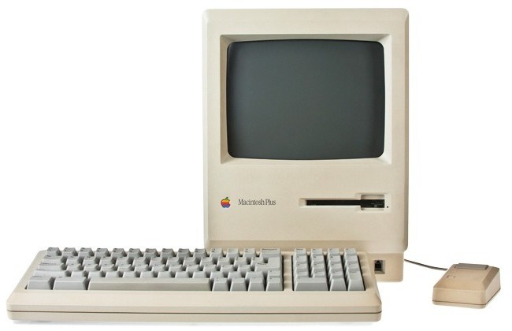
Figure 11: Apple Macintosh Plus(Image Source: shrineofapple.com)
In 1985 Shatter showed that the potential for
computer-assisted comic-book art was a reality. The art for
publication was drawn by hand on the computer as opposed to
later methods of scanning in inked pages for digital coloring.
Publisher First Comics Publishing had a potential hit on their
hands—a hit through the novelty of new technology.
Artist Mike Saenz started with a series of rough pencil sketches
for each page. These were reviewed by the editors of the comic.
When approved, Saenz drew the comic pages on a Macintosh Plus
with 1MB RAM using MacPaint and MacDraw. The pages were saved on
a disk drive with floppies holding a paltry 800 KB. The greatest
challenge was drawing on the nine-inch monochrome screen with a
resolution of 512 x 342 pixels. The screen was so small that the
artist could only see and work on a section of the current page
(by some accounts, two-thirds of the page). Saenz drew the pages using the standard Mac
mouse; there
were no scanners available to capture analog art, and the
artists of Shatter only procured digitizer tablets at a
later time.
For the first issues, the artist printed the pages on an Apple
dot-matrix ImageWriter. In late 1985, when the regular series
launched, Apple donated a LaserWriter.
Quoting series editor Mike Gold in the editorial of
Shatter #1:
Better still, Apple came out with their LaserWriter, an
unbelievable printer that produces crisp, sharp printouts of
Mike's work. For graphics art reproduction, the difference
between the LaserWriter and traditional dot-matrix printers is
like the difference between glossy coffee-table art books and
paintings on cave walls. And better still, the folks up at Apple
gave us a LaserWriter. That sucker isn't
exactly cheap; it's nice to know you're appreciated. Thanks,
Apple!
The LaserWriter enabled Adobe PostScript font styles for
typesetting text and made illustration graphics smoother and
less pixelated because of the device's powerful interpolation.
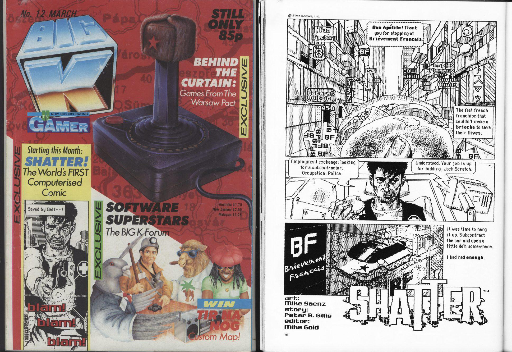
Figure 12: The first ever publication of Shatter in the
pages of Big K.
First Comics Publishing and the History of Shatter
The three people most closely identified with
Shatter are artist Mike Saenz, writer Peter B. Gillis
(both of whom created the series), and artist Charlie Athanas,
who joined the publication in issue #8.
Chicago-born artist Mike Saenz started work on
Shatter at the age of 26. The book was among his first
professional work and served as his breakthrough. After working
on Shatter, Saenz went on to produce digital comics for
Marvel and to work in software development.
Figure 13: Mike Saenz in 1985 (source:
http://marvel.wikia.com/wiki/Mike_Saenz)
Peter B. Gillis was an established comics writer when he started
work on Shatter at the age of 32. He had freelanced for
Marvel Comics with his first published story in
Captain America. After numerous credits in Marvel's
second-tier comic books, Gillis went on to work as an editor for
the Florida-based publisher New Media Publishing until 1981. His
first work for First Comics Publishing was the science-fiction
series Warp until 1985. Then he joined the team of
Shatter.
Figure 14: Peter B. Gillis in the 2010s (source:
http://comicbookdb.com/creator.php?ID=960)
In the early 1980s, publisher First Comics Publishing was one of
the few alternatives to the "big two": Marvel Comics (Spider-Man,
X-Men, Avengers) and DC Comics (Superman,
Batman, Wonder Woman).
Shatter saw its first printing in the British computer
games magazine Big K, issue #12, its last issue before
it ceased publication. It was a four-page story printed in black
and white.
The series was touted as "the first computerized comic."
According to one report, Saenz and Gillis had offered the series
to Marvel Comics, who declined; only then was it picked up by
First Comics Publishing.
After its debut, Shatter went on to be published by
First Comics Publishing (Chicago) as a back-up feature to the
ongoing comic series Jon Sable. These eight-page
installments ran from issues #25 to #30 of the
Jon Sable series. The feature proved to be so popular
that publisher First Comics decided to release a
Shatter special issue with 28 original story pages by
Mike Saenz and Peter B. Gillis.
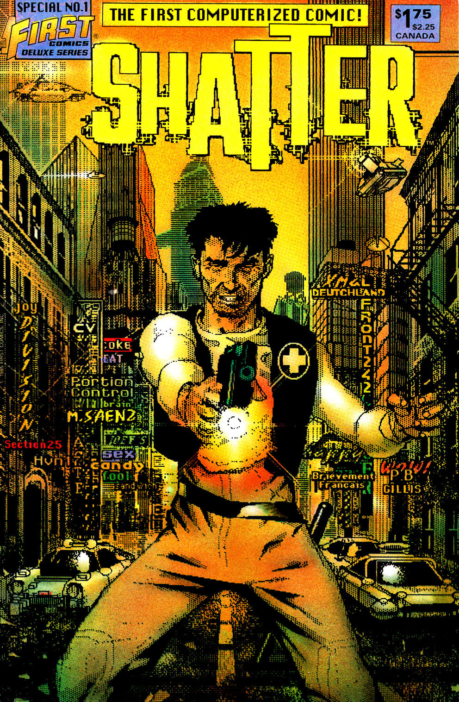
Figure 15: Shatter Special #1 cover (left) and interior
art (right), 1985.
It sold 100,000 copies in three days, breaking the existing
sales records for independent comic books. In 1985 a
high-selling issue of Marvel Comics's
The Uncanny X-Men sold 300,000 copies. By comparison,
sales of Shatter were very impressive for an
independent comics publisher.
First Comics commissioned an ongoing series. At this point,
writer Peter B. Gillis had moved on, so the artist Mike Saenz
started to not only draw the book but also provide the plot and
script.
The first issue of the ongoing Shatter series sold
60,000 copies. After releasing issue #2, Mike Saenz left his
creation to work on other projects. In 1988 he would go on to
produce the full-color digital graphic novel
Iron Man: Crash for Marvel Comics and work on the comic
creation app ComicWorks before being bought out by software
maker Macromedia.
Audience Reactions
This paper was written in 2018. Now, more than 30 years later,
it is difficult to assess what the original audience reaction
was at the time of publication. The few remaining reviews show
very positive feedback lauding the use of the Macintosh. In
hindsight, much of the praise is directed towards the promised
potential of digital art and not always the results on display
at the time.
In the series' letters pages, readers criticized the story for
being a derivative of Blade Runner. In issue #2, one
reader writes:
"The only thing bad about it is the story. It does not make much
sense and the whole thing is terrible."
While the digital art did find a lot of praise ("The graphics
inside are excellent" from the letters column in issue #2), it
was not universally praised, as can be seen in this letter from
the same issue:
"The graphics in Shatter are likely to be more of a
turn off to potential computer comic connoisseurs due to their
primitive quality and unimaginative execution."
The oddest reactions still available in their original form are
from the letters pages of the series. First Comics Publishing
advertised the digital nature of the series and went to great
lengths to explain the process in its editorial pages.
Nevertheless, in issue #3, a reader writes that they doubt that
the art was, in fact, produced on a computer:
I'm not accusing you of doing anything yet, but a lot of
Shatter #1 looked like it wasn't quite done by computer
... The curves in the walls are just too perfect, even for a
computer ... I figure if you're going to do a comic on a
computer, you ought to make it look like a computer drawing, not
like a drawing done by hand.
The editor responded that for a small fee they would be happy to
send a disk to the reader with the original artwork in its
digital form as proof.
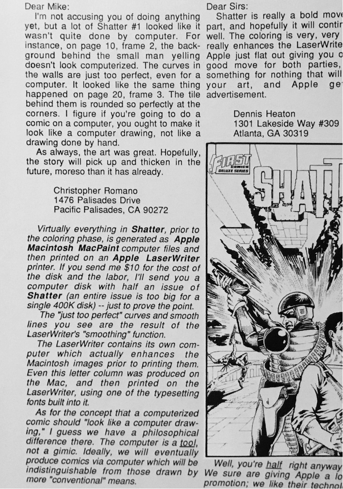
Figure 16: Readers' baffling reactions in the letters page.
After moving on to DC Comics, Mike Gold, the original editor of
Shatter, reminisced about the series in the
introduction of DC's own digital comic effort
Batman: Digital Justice in 1990 (emphasis provided by
the writer of this paper):
At that time, I was the editor of a midwest comic book company
when a couple of old friends, Peter Gillis and Mike Saenz,
showed me rough printouts of a story that was produced on a 128
K Apple Macintosh computer, using but one disk drive. The
artwork was chunky and brittle: it looked like
some amphetamine addict had been given a box of a zip-a-tone
that suffered from a glandular disease.
But the look was totally unique to comics. Within several
months, we refined the look and the resulting effort
Shatter was one of the best-selling comics of the year.
It completely astonished the folks over at Apple Computer, Inc.,
who never perceived such a use for their hardware.
Tumultuous Changes
Ultimately, Shatter would run for 14 issues from 1985
to 1988, but in 1986, after Mike Saenz left, First Comics
Publishing did not want its successful series to suffer delay.
Not to leave the series without a writer and an artist, Steven
Grant jumped in to fill the writer's role for issues #3 and #4
while Steve Erwin and Bob Dienenthal took over the art chores
for issues #3 to #7.

Figure 17: Interior story page from Shatter #2 (art by
Mike Saenz).
The art in these issues was workable but no longer special
because the artists penciled and inked traditionally and had
their pages scanned into the Macintosh to be lettered in
MacPaint. This deprived Shatter of its special look.
The art degraded to standard comic book art, albeit strongly
pixelated to suggest that computers remained a vital part of the
production process.
At least in issue #5, original writer Peter B. Gillis returned
to the fold to give the story focus and the dialog edge. But
Shatter would still need another couple of issues
before it could hit its stride with a new artist coming on
board.
Charlie Athanas to the Rescue
The departure of Mike Saenz left Shatter without its
main selling point: art drawn directly on a computer. The book
needed to return to its unique art style. It needed a new artist
who was capable of producing the artwork on a Macintosh. Enter
Charlie Athanas. This young artist from Illinois joined the team
just in time
to continue the storyline Peter B. Gillis started.
On his website, Athanas describes the process:
Artwork created from layout to the black and white 'camera
ready' art before color was added in the traditional method. I
produced this art on a MacPlus with 1 MB of RAM and an 800 K
floppy drive. Only about two-thirds of a full page was visible
to work on unless you switched to thumbnail mode to see the
entire page on a drastically reduced scale. About half the
issues were drawn with the standard Mac mouse until a small
drawing tablet became commercially available.
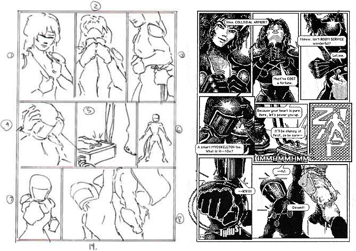
Figure 18: Athanas's rough thumbnail sketch of a page (left) and
the final monochrome artwork (right).
Athanas re-established drawing directly on the Macintosh Plus
with the computer mouse. To speed up publication efficiency,
Athanas drafted rough pencil sketches in order to sketch out
layout design, speed up the writing of the script, and go
through editorial review.
Figure 19: Charlie Athanas in the 2010s (source:
https://www.linkedin.com/in/charlieathanas/)
Without scanners at his disposal, Athanas manually redrew the
rough sketches directly on this Mac. Now that the series was
back to computer-drawn artwork, the pages had a much cleaner art
style. Athanas not only used MacPaint but also FullPaint by Ann
Arbor Softworks.
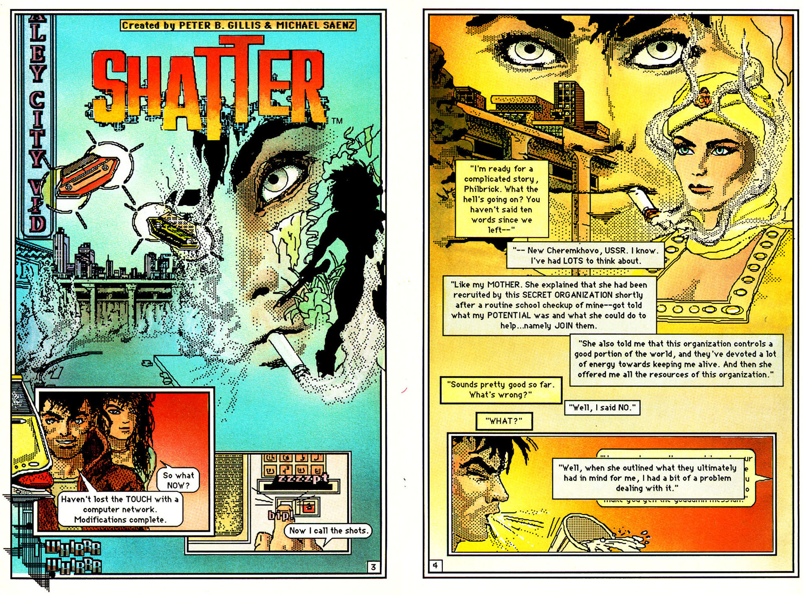
Figure 20: Interior story pages from Shatter #9 (art by
Charlie Athanas).
Shatter was saved for the time being. Sales stabilized
with the new creative team. But alas, technology progressed at a
breakneck pace in the mid to late 80s. The home-computer
revolution had started to sweep computers into every American
household. A comic series about a dystopian future no longer
captured its readers' imaginations. With issue #12, Peter B.
Gillis left as a writer to be succeeded by Jay Case. First
Comics Publishing met with financial difficulties, and the
series' novelty of new technology wore off. Sales started to
slip, and by 1988 they had dropped sufficiently to make the
publication no longer viable. First Comics Publishing allowed
the creators to complete their story but no longer start a new
one. Shatter was cancelled with issue #14.
Thus ended the first sustained experiment in commercial
digital-art production after three tumultuous years. By then,
editor Mike Gold had left for DC Comics, leaving editor Rick
Oliver to write the last words for the series in the letters
page of Shatter #14 (cover date April 1988):
When Shatter first appeared, it was produced solely
with the software that came packaged with the Macintosh; Apple's
own MacPaint. More recently, we have also incorporated MacDraw,
Word, Switcher, MacBillboard, and FullPaint. This letters column
and the First Notes page were produced with Word and XPress, an
electronic page make-up program.
There are more new graphics programs available every day, each
more sophisticated than the last, and there's no telling where
it will all lead.
But for now, Shatter has served its purpose, and it's
time to move on. Thanks to all our loyal readers who stuck it
out through both the great and the not-so-great issues. Thanks
to Peter Gillis and Mike Saenz for starting the ball rolling,
Steve Erwin and Bob Dienethal for keeping it going and finally,
let's give a big hand for Charlie Athanas for revitalizing the
book for a classy finish.
The technology might not yet have been advanced enough, but
Shatter proved one thing to the comic book industry:
comics could be produced digitally, and dots by any other name
could still be art.
III. The Production Process
To destroy is always the first step in any creation.
- E. E. Cummings
For the purposes of this paper, it is of great interest to
compare the process used to create Shatter with the
process used most commonly in American comics of the 1980s and
then juxtapose that with the process used nowadays (2018). This
will show how much Shatter deviated from its
contemporaries and allow us to investigate how much of its
production process can be found in today's comic books.
The Typical Process in the 1980s
The writer of the comic typed the story and the script on his
typewriter and sent it to the editor for review.
Once approved, this physical script went to the penciller, who
sketched the rough layout scribbles of the 22 individual pages.
These were much smaller than the original artwork or the printed
page and served for design purposes. Then the penciller drew the
actual pages (usually at double the size of the printed page)
with the figures, the props, and the background scenery or
locations.
In some cases, the penciled pages were returned to the writer
who then provided the script for the captions, dialog, and
thought balloons. In other cases, the script already had all the
captions and dialog when the penciller received it.
In the next stage, the letterer drew the caption boxes, speech
bubbles, and thought balloons to then place the letters in them.
As soon as the penciled and lettered pages were completed, they
were sent to the inker. They redrew the penciller's art by
tracing the lines—providing them with weight, cleaning them up,
and giving the solids some texture. The inker made sure that
objects in the distance were drawn with a faint line and closer
objects or characters were drawn with the full weight they
needed to tell the story.
Finally, the colorist applied colors and tones to the artwork by
hand.
The pages of the comic book are then photographed for print and
reduced to the desired size.
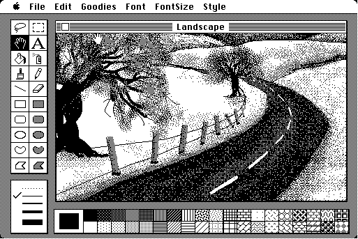
Figure 21: MacPaint on a monochrome Macintosh (ca. 1984).
The Process used for Shatter
The digital workflow of Shatter also starts with the
script. But as described by Mike Gold, the series' editor, in
the editorial of Shatter Special #1, "... Peter would
dialogue Mike's art on an Apple III, but it would be lettered on
the Mac."
In Shatter #3, Editor Mike Gold continued to describe
the process: "Virtually everything in Shatter, prior to
the coloring phase, is generated as Apple Macintosh MacPaint
computer files and then printed on an Apple Laserwriter."
And further in the editorial of Shatter Special #1:
Together with First Comics' production manager Alex Said and
editorial coordinator Rick Oliver, we agreed that every aspect
of Shatter would be performed on the Mac - the art, the
lettering, the logo, the advertising, even this editorial.
Everything but the color. We could create the color on the Mac
(and we could come up with some interesting effects by creating
a wider range of tones) but it would take far too much time.
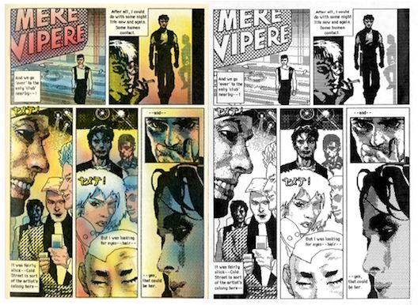
Figure 22: Interior story art from Shatter Special #1,
colored (left) and before coloring (right).
So, the process used for Shatter saved on transcribing
the script and on producing the pencils to be inked because the
artwork was drafted directly on the computer. The coloring as
the last step still maintained the established traditional
workflow and did not save any time in this respect.
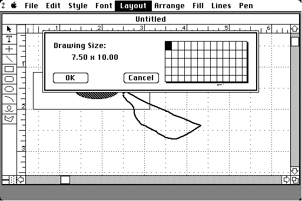
Figure 23: MacDraw on a monochrome Macintosh (ca. 1985).
The Typical Process in 2018
Today, we need to distinguish between comic books produced by
the "big two" commercial comic book publishers, Marvel and DC
Comics (and to a lesser extent, the next large publishers Image
and Dark Horse), and those comics produced by independent
artists or groups of artists.
Commercial Comics
Even at the time of writing this paper, the steps in creating a
physically printed commercial comic book have not changed
drastically compared to 1985, but the process is greatly
expedited. A writer writes the plot and the script and sends it
as an email to the editor who then provides all the changes and
forwards it to the artist.
This where the process becomes very disparate. Different artists
work differently. Some will still draw the artwork on paper
board using a pencil and then either ink it themselves or pass
it on to an inker to be embellished. Even if this analog path is
chosen, some artists will still use digital references or even
trace from printouts of digital sources. They might model
difficult background shots using 3D software and then draw from
this reference. In any case, the artwork is scanned into the
computer and sent as a digital file to the publisher for further
processing.
Two steps in the process have switched nearly exclusively to
digital: lettering and sound effects and the coloring of the
book.
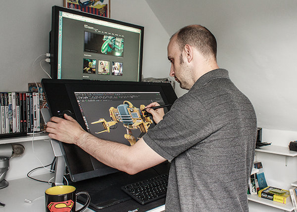
Figure 24: An artist using a Wacom Cintiq 24"
(Source:
http://www.antcgi.com/2014/05/27/thoughts-on-the-wacom-cintiq-24hd/)
While a large part of the drawings for commercial comic books is
still produced using analog means, the tendency to produce
purely digitally is slowly prevailing in independent comics.
Artists either draft their artwork directly on a screen using a
Wacom tablet, Microsoft Surface, or iPad Pro or they sketch on
paper and refine their work digitally. Some artists use 3D
software to meticulously render their characters, props, and
backgrounds. Then they combine the components using paint or
layout software.
That being said, commercial superstar artists like DC Vice
President and one of the current Superman artists Jim
Lee and Green Lantern artist Ethan Van Sciver still
pencil and ink their work.
Even though exceptions do exist, to this day, the mainstream
process is still not fully digital with analog steps remaining
for drafting and inking. The process of coloring and lettering
are fully digital. One of the reasons for the pedantically
segmented process in commercial comics is strict editorial
control over every step. This not only allows the editor to play
gatekeeper, catching any potential quality issues or any part of
the commissioned work that might be inadequate or inappropriate,
it also allows the editor to keep an eye on the progress of the
comic book from the first word laid down to the finished piece
being delivered to the printer.
Strangely, this only partially digital production process needs
to end in a digital file for printers to handle. Even though the
sales of physical comic books are dwindling in 2018, digital
distribution of comic books through vendors like comixology.com
cannot yet compensate for the drop in sales.
Independent Artists
Again, it is hard to generalize; there will always be artists
who prefer traditional analog means. In some cases, they might
not even use pencil and ink on paper but could use a completely
different analog media, such as oil on canvas or collage or any
of the multitude of different techniques established over the
centuries.
Independent comics artists often work alone or, at most, in a
small team. They mostly do not have a support infrastructure, so
they do more on their own. This is one of the reasons why
digital production is more common in the field of independent
artists.
Due to the lack of editorial control, the process does not even
always need to start with a ready plot and script but can start
with sketches that evolve into a complete story. But for the
sake of comparability, let us start the digital process an
independent artist uses with the story creation (plot and
potentially script). They then might produce thumbnail layouts
of the pages to get an idea of the story flow and the necessary
number of panels. This might be done on paper or, already at
this stage, on the computer.
Then the digital artist completes the final stages with digital
tools. Outline art might be drawn similarly to previous
techniques with a sketch, a finer rendering of the sketch in
more detail, and then the final cleanup. But because they are
working digitally, they are not bound to the processes of
physical media.
After rendering the outlines, the color art can be produced
without delay or the need to change medium in the next step.
Lettering and sound effects are added. And the page is done.
Purely digital pieces can be distributed over the web; those
produced for print can be emailed to the printers for direct
printing.
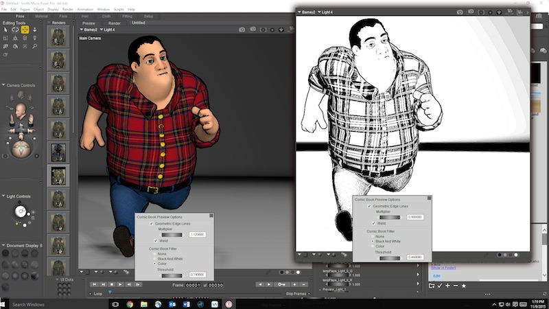
Figure 25: The Smith Micro application Poser allows artists to
pose 3D charactersand render them out as ink drawings for use in
their comics.
Comparing the Processes
In contrast, Shatter was limited by the available means
of communication, with disks with the digital materials being
mailed conventionally. But save for this, the whole process was
digital. The limitations of the printing presses made it
necessary to produce a hardcopy of the line art so that it could
be photographed for the plate-based offset printing of the day.
Coloring solely on a computer was not yet feasible on the
machines available in 1985, remaining a task to be done by hand
the traditional way.
IV. The Other First Computer Comic
"Someone asked me the other day what it feels like to see all my
'old stuff' reappearing, at long last, in digital. And I had to
smile because to me it doesn't feel like 'old stuff.'"
- Barbara Hambly
While Mike Saenz was the first to produce and publish a complete
comic book on a computer, other artists quickly followed. In
1988, German comic book artist Michael Götze created the
Das Robot Imperium comic album. This was the first
European comic created on a computer. He did not use an Apple
Macintosh to create this black-and-white comic, but instead the
Atari 520ST, an affordable competitor of the Mac that also came
with a mouse by default.

Figure 26 Michael Götze's traditionally painted covers for
Das Robot Imperium volumes 1 to 3 (Source:
Das Robot Imperium by Michael Götze, Carlsen Comics
Verlag, 1988, 1990, 1992)
Pixel Imperium
The comic's story chronicled the fight of a small group of
humans against the robots who ruled over them. Even in the
1980s, this was not the most original plot. Like
Shatter, this comic's main selling point was that the
artist created it on a computer.
Even though the first volume of
Das Robot Imperium "Jäger ohne Gewissen" ('Hunter
without a conscience") eschews the use of color, it is a far
more lavish and elaborate work compared to Shatter. The
scenes depicted in the panels have depth and dimensionality. The
figures are not flat like in Shatter, Goetze renders
the characters' faces with much greater expressiveness. He took
much more time to produce each page than the fast release
schedule of Shatter would allow.

Figure 27: Left: interior BW page from volume one
Das Robot Imperium: Jäger ohne Gewissen. Right:
interior pages from volume two
Das Robot Imperium: Volthead
The Creation Process
On the Atari ST, Götze programmed his own 3D wireframe
application and special printing software using
GFA-Basic. In the application he called
Pixelart, Götze created 3D models of the human body and
put them in different poses. Then he combined the figures with
flat backgrounds. He also modeled props and mechanical
backgrounds like a command center in 3D. Once the 3D models were
created, he could place them in the scene and create complicated
perspectives with the wireframe models. Eventually, Goetze had a
library of objects that he could reuse.
He would laboriously touch up the images in the Atari ST paint
application D.E.G.A.S. Elite using the mouse to give
them the final polish.
Work on Robot Imperium started in 1986 on the first of
three volumes in the European album format. Götze drew the first
volume in black-and-white. The gradients were dot patterns
printed with a typical dot-matrix printer used in offices at the
time: the Epson FX-80.
The back of the first two volumes shows a photo of the artist
Götze toiling away on his Atari ST. And the last few pages of
the first volume describe Götze's process for drawing the panels
on the Atari ST: "This Is How a Comic Is Made on a Computer"
("So entsteht ein Comic am Computer"). From today's perspective,
it might appear comedic that the process description includes a
short explanation of how a computer mouse works. There even is
mention of Shatter by Mike Saenz and Peter B. Gillis
(inexplicably, Gillis is referred to as Bernd Gillis in the
text). The piece's writer does not show high regard for Saenz'
computer art, calling it "unsatisfactory" and "experimental."
The most interesting parts of this description were the
screenshots of the individual steps in Götze's creation process.
They show how he places the rudimentary 3D model of a spaceship
over a rough sketch of the background foliage in a forest scene.
The wireframes of the spaceship show all sides, even the parts
that should be obscured from the viewer. Götze manually cleans
up the image, meticulously removing the lines that should not be
visible. Then he embellishes the manually-drawn backgrounds,
thus integrating them with the 3D model. Then he spots the black
areas and emphasizes individual lines to give them more weight.
Finally, he shades the image in dotted patterns for different
levels of light and dark.
Artistically, this painstaking process proved to be very
successful. The drawings are very much in the style of the
French bandes desinée of the 1980s. This speaks to the artist's
craftsmanship. Götze followed the first volume with the second
one titled "Volthead" in 1990, this time in full color. It was
printed on a dot-matrix printer in multiple passes with
different colored ribbons.

Figure 28: A description of the process of creating a computer
comic in Das Robot Imperium: Jäger ohne Gewissen
The Ghost of A Different Future
In 1992, Götze released the third volume "Ein erster Sieg?" ("A
First Victory?") with an even greater level of detail in his
drawings and an even greater level of artistic accomplishment.
Its slickness moved it so close to the traditionally drawn and
colored analog comics to make it indistinguishable at first
glance. This also meant that despite all the effort put into it,
the comic lost one of its most distinguishing features. It lost
the "look" of a computer comic.
Commercially, Das Robot Imperium ended up not being very
successful. It remains a testimony to artistic dedication,
adventurous graphical experimentation, and the stubbornness to
make the best use of the capabilities of a barely suitable
computer to achieve professional results.
V. Conclusion: Subversive History, Bright Future
"Someone asked me the other day what it feels like to see all my
'old stuff' reappearing, at long last, in digital. And I had to
smile because to me it doesn't feel like 'old stuff.'"
- Barbara Hambly
The Importance of Shatter as Media Art
Shatter is very much of its time. The
computer-generated art from the mid-80s is stiff and
un-lifelike. At the same time, it shows a mad energy that comes
from artists discovering what a piece of equipment can do beyond
what anyone thought before them. This energy might be fueled by
the intention to subvert the traditional comics production
process.
The art style is primitive by nowadays standards, but it is most
definitely the star of the series compared to the
run-of-the-mill story content. It is still visually interesting
to look at each page and wonder at the intricacies that Mike
Saenz and Charlie Athanas were able to eke out of their
Macintosh.
While only modestly entertaining as a piece of commercial
entertainment, Shatter is a cultural artifact and a
relic of a long-bygone era, with a good helping of quirkiness
and originality in execution. It shows the evolutionary step
taken to where technology has brought us today. To stay in
evolutionary terms, this comic book is the fish whose fins more
resemble legs, even though it has not yet fully left the sea. In
essence, the idea of Shatter is fascinating. The idea
that one day, comics might be produced digitally, but in 1985
Mike Saenz and Peter B. Gillis (and later Charlie Athanas) were
impatient and did not want to wait for technology to catch up
with their aspirations.
Archiving Shatter for Media Arts Histories
Even though Shatter was produced digitally, it was
always targeted at being printed. Its creators and the
publishing company sought to print it and distribute it as a
physical product. Preservation of individual printed copies is
subject to the same principles as preserving other kinds of
print media and periodicals: temperature- and moisture-regulated
archives and a complete absence of light during storage.
Aside from the physical medium, Shatter is one of the
earliest artifacts with the raw content available as digital
files. Unfortunately, the demise of First Comics Publishing has
made it unlikely for us to use this venue to obtain the original
digital files in the MacPaint format. It is certainly possible
to seek out the files from the original artists. The physical
media the files are stored on (disks or hard disks) might
already be corrupted after three decades of storage. If the
files can be found, then they can be archived in distributed
storage systems such as a cloud or a raid setup. In one of the
letters columns, the editor notes that for a small handling fee,
the publishing company would be prepared to send a disk with
digital artwork to interested parties. If any readers made use
of this, then digital copies might be stored away on disks
somewhere in the United States.
Apart from the files generated during production, there might
even be an animated digital trailer. According to one source,
the original artist even put together something of the kind that
was distributed on a disk. These might also still be available.
It exceeds the mandate of this paper to locate them.
Learning from Shatter
One might argue that it is not a matter of whether
Shatter is a good piece of entertainment, an
accomplished piece of art, or the culmination of a cultural
discipline. Even at the time of its creation, it never pretended
or aspired to be any of this. To many, Shatter exudes
the strange fascination that Eadweard Muybridge's sequential
photography of galloping horses and walking men and women in
Victorian times manifests, even though we have contemporary 4K
footage of the same motifs in much higher quality.
It can even be argued that Shatter is not an artifact
from the past that has had a great influence on how we create
and even read comics today. Its reach was not great enough to
have done so. But the technology it employed at the time
certainly had taken its first steps towards the total
digitization of the visual arts. Today we have become used to
seeing computer-generated graphics in film, in commercial art,
and in comics. The creators of Shatter were the first
to see these possibilities in the available hardware before it
was capable enough.
When we run original Macintosh software in emulation, software
such as MacPaint, MacDraw, and FullPaint, it is easy to lose
sight of the context it was used in at the time. Perhaps,
Shatter can open our eyes to this context. We shouldn't
frown upon software's limitations but recognize how artists in
the past used it for actual honest-to-God production work. They
did not see the restrictions, rather they saw the potential for
experimentation. And all of this with the pressure of
publication deadlines looming.
Exploring Shatter not only shows us the achievements of
the creators but also their omissions, failings, and blind
spots: They did not make any use of the nascent 3D graphics
already taking shape on the 16-Bit machines of the time. In the
year of Shatter's cancellation, comics artist Michael
Goetze, from Germany, had already been making use of 3D graphics
in his electronic comic Das Robot Imperium (Carlsen
Comics, 1988) on the Atari ST, a 16-Bit computer of a similar
generation as the Apple Macintosh.
It is easy to take Shatter at face value and only see
its clunkiness, its deficiencies, and the ineptitude in its
execution. As an audience and perhaps even as fellow artists, we
can all instead look at Shatter and ask ourselves how
much time and effort Mike Saenz and Charlie Athanas have put
into the work. At any point in their creative process, they had
the opportunity to give up and abandon this tedious and
thankless exercise. Perhaps, at some point, each one of them
stepped back from the nine-inch screen, with its monochrome line
art, and shook their heads, thinking how much effort they had
put into this work that to some audiences might look bad or
even, as Mike Gold put it, like "some amphetamine addict had
been given a box of a zip-a-tone." Maybe they thought how much
easier it might have been to take pencil and pen to paper
instead.
And perhaps they knew how "cool" they were, and perhaps they
felt how subversive their art was because they were at the
technological razor's edge in a world not yet ready for it.